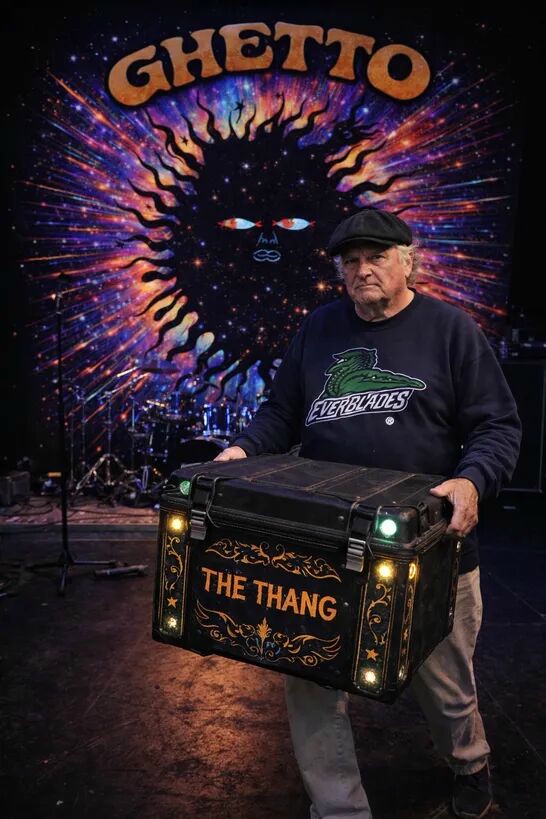

Interstellar funk-rock collective
Ghetto Wookie
The five-page public-facing sandbox. Its ordinary structure is intentional: this is where WebOps demonstrates controlled, reviewable website changes.
Shag Fantastiq
Velvet Titan of Bass
Bodacious Scraggleton XIII
Fallen royal groove sovereign
Luna Voce
Amethyst Siren of Trion-6
DJ Astrognome
Temporal turntablist

Gary
Road manager · keeper of The Thang